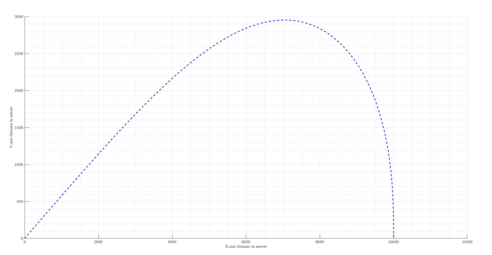
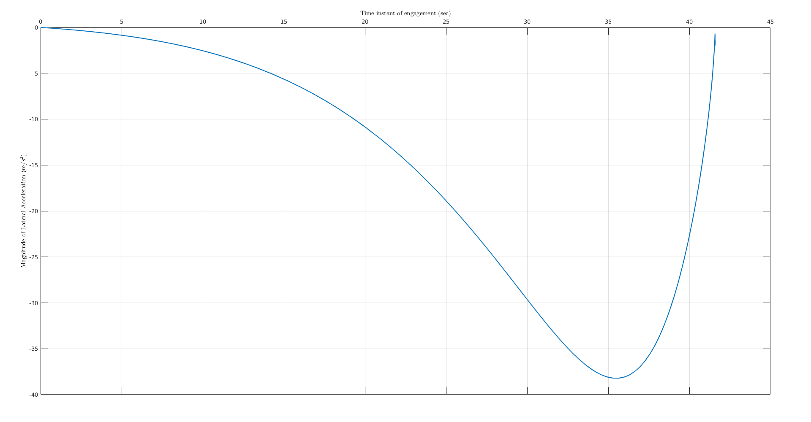
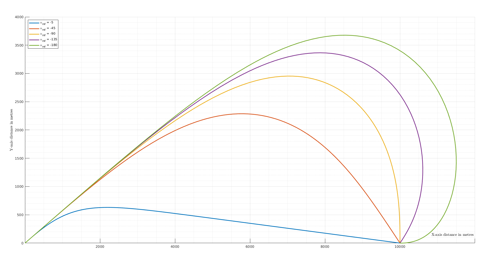
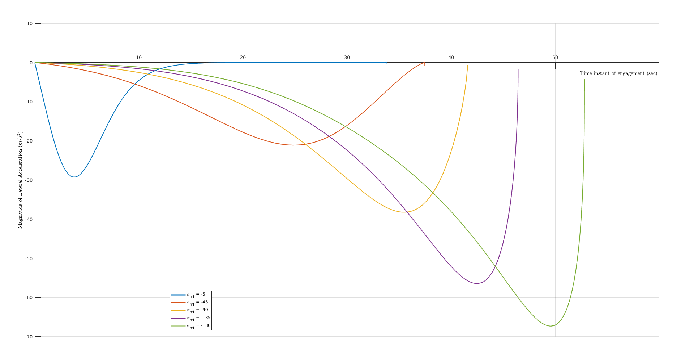
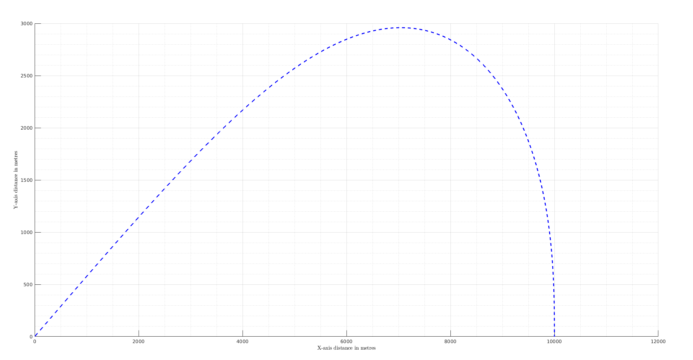
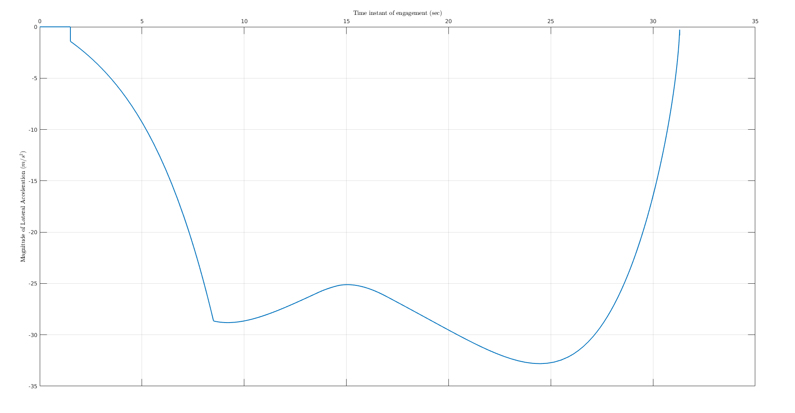
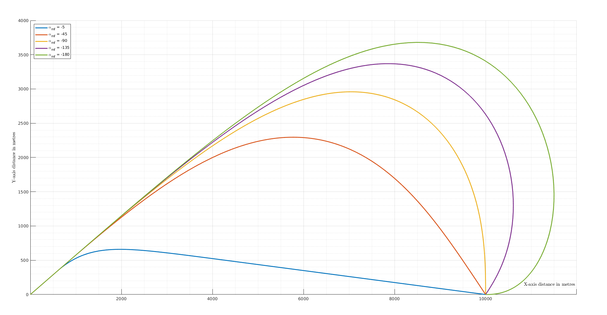
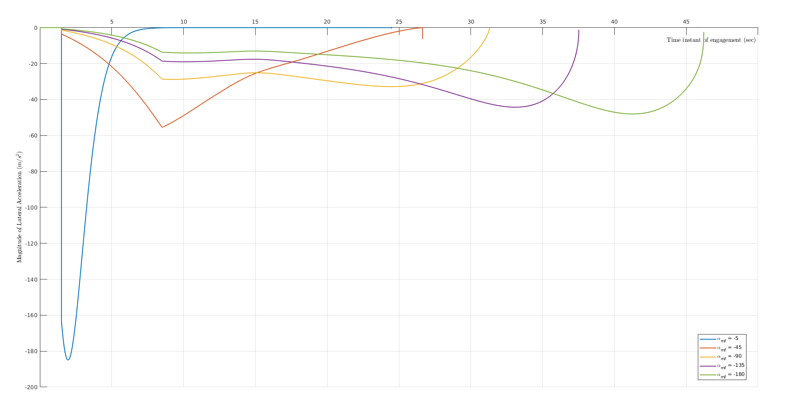

Assignment 3 Problem 4 and Problem 5 Part 2
Constant Speed Missile Model - Simulations from Impact Angle Constrained Interception of Stationary Targets
Case 1 Simulation - Constant Speed Missile with impact angle -90 degrees
Equations of Motion
Solve non-linear M-T kinematics
alm0 = deg2rad(30); almf = deg2rad(-90); Vm = 300; % m/s R0 = 10000; Th0 = deg2rad(0); initCond = [R0; Th0; alm0; 0; 0; R0 * cos(Th0); R0 * sin(Th0)]; simTime = [0, 100]; solverOptions = odeset('Event', @terminate_intg, 'AbsTol', 1.0e-8, 'RelTol', 1.0e-6, 'Refine', 5); % ************************************************************************* % Solve equations of motion using orientation switching guidance [tsol1, ysol1, evT1, evS1, seq1] = ode45(@(t, y) p4state(t, y, Vm, alm0, almf), simTime, initCond, solverOptions); % Parameter calculations Am1 = zeros(length(tsol1), 1); for index = 1:length(tsol1) deriv = p4state(tsol1(index), ysol1(index, :), Vm, alm0, almf); Am1(index) = Vm * deriv(3); end
Vehicle Trajectories with LOS Shots
Missile Target Engagement Simulation
figure; fig = gcf; fig.Name = 'Trajectories'; fig.Color = 'White'; fig.WindowStyle = 'normal'; fig.WindowState = 'maximized'; ax = gca; hold on; plot(ax, ysol1(:, 4), ysol1(:, 5), '--b', 'LineWidth', 2); % Orientation Switching hold off; xlabel('X-axis distance in metres'); ylabel('Y-axis distance in metres'); grid on; grid minor; snapnow;
1.2) Lateral Acceleration profile
figure; fig = gcf; fig.Name = 'Am'; fig.Color = 'White'; fig.WindowStyle = 'normal'; fig.WindowState = 'maximized'; ax= gca; plot(ax, tsol1, Am1); xlabel('Time instant of engagement (sec)'); ylabel('Magnitude of Lateral Acceleration $(m/s^2)$'); ax.XAxisLocation = 'origin'; ax.YAxisLocation = 'origin'; snapnow;
Case 2 Simulation - Constant Speed Missile with multiple impact angles
% Setup plot settings set(groot, 'DefaultFigureVisible', 'off', 'DefaultFigureWindowStyle', 'normal', 'DefaultFigureWindowState', 'maximized'); % Plot windows ---------------------------- fig3 = figure; fig3.Name = 'Trajectories'; fig3.Color = 'White'; fig3.WindowStyle = 'normal'; fig3.WindowState = 'maximized'; ax3 = axes(fig3); hold(ax3, 'on'); xlabel(ax3, 'X-axis distance in metres'); ylabel(ax3, 'Y-axis distance in metres'); grid(ax3, 'on'); grid(ax3, 'minor') ax3.XAxisLocation = 'origin'; ax3.YAxisLocation = 'origin'; % ************************************************************************* fig4 = figure; fig4.Name = 'Am'; fig4.Color = 'White'; fig4.WindowStyle = 'normal'; fig4.WindowState = 'maximized'; ax4 = axes(fig4); hold(ax4, 'on'); xlabel('Time instant of engagement (sec)'); ylabel('Magnitude of Lateral Acceleration $(m/s^2)$'); ax4.XAxisLocation = 'origin'; ax4.YAxisLocation = 'origin'; for almf = each(deg2rad([-5, -45, -90, -135, -180])) % Solve equations of motion using orientation switching guidance [tsol, ysol, evT, evS, seq] = ode45(@(t, y) p4state(t, y, Vm, alm0, almf), simTime, initCond, solverOptions); Am = zeros(length(tsol), 1); for index = 1:length(tsol) deriv = p4state(tsol(index), ysol(index, :), Vm, alm0, almf); Am(index) = Vm * deriv(3); end plot(ax3, ysol(:, 4), ysol(:, 5), 'DisplayName', ['\alpha_{mf} = ', num2str(rad2deg(almf)), ''], 'LineWidth', 2); % Orientation Switching plot(ax4, tsol, Am, 'DisplayName', ['\alpha_{mf} = ', num2str(rad2deg(almf))]); end hold(ax3, 'off'); hold(ax4, 'off'); legend(ax3, 'Location', 'northwest'); legend(ax4, 'Location', 'best');
Vehicle Trajectories with LOS Shots
Missile Target Engagement Simulation
fig3.Visible = 'on';
snapnow;

1.2) Lateral Acceleration profile
fig4.Visible = 'on';
snapnow;
clear;

Realistic Simulation of Problem 4
Case 1 Simulation - Real Missile with impact angle -90 degrees
Equations of Motion
Solve non-linear M-T kinematics
alm0 = deg2rad(30); almf = deg2rad(-90); Vm0 = 300; % m/s R0 = 10000; Th0 = deg2rad(0); initCond = [R0; Th0; alm0; 0; 0; Vm0; R0 * cos(Th0); R0 * sin(Th0)]; simTime = [0, 100]; solverOptions = odeset('Event', @terminate_intg, 'AbsTol', 1.0e-8, 'RelTol', 1.0e-6, 'Refine', 5); % ************************************************************************* % Solve equations of motion using orientation switching guidance [tsol1, ysol1, evT1, evS1, seq1] = ode45(@(t, y) p5state_p4realistic(t, y, almf), simTime, initCond, solverOptions); % Parameter calculations Am1 = zeros(length(tsol1), 1); for index = 1:length(tsol1) deriv = p5state_p4realistic(tsol1(index), ysol1(index, :), almf); Am1(index) = ysol1(index, 6) * deriv(3); end set(groot, 'DefaultFigureVisible', 'on');
Vehicle Trajectories with LOS Shots
Missile Target Engagement Simulation
figure; fig = gcf; fig.Name = 'Trajectories'; fig.Color = 'White'; fig.WindowStyle = 'normal'; fig.WindowState = 'maximized'; ax = gca; hold on; plot(ax, ysol1(:, 4), ysol1(:, 5), '--b', 'LineWidth', 2); % Orientation Switching hold off; xlabel('X-axis distance in metres'); ylabel('Y-axis distance in metres'); grid on; grid minor;
1.2) Lateral Acceleration profile
figure; fig = gcf; fig.Name = 'Am'; fig.Color = 'White'; fig.WindowStyle = 'normal'; fig.WindowState = 'maximized'; ax= gca; plot(ax, tsol1, Am1); xlabel('Time instant of engagement (sec)'); ylabel('Magnitude of Lateral Acceleration $(m/s^2)$'); ax.XAxisLocation = 'origin'; ax.YAxisLocation = 'origin';
Case 2 Simulation - Real Missile with multiple impact angles
set(groot, 'DefaultFigureVisible', 'off', 'DefaultFigureWindowStyle', 'normal', 'DefaultFigureWindowState', 'maximized'); % Plot windows ---------------------------- fig3 = figure; fig3.Name = 'Trajectories'; fig3.Color = 'White'; fig3.WindowStyle = 'normal'; fig3.WindowState = 'maximized'; ax3 = axes(fig3); hold(ax3, 'on'); xlabel(ax3, 'X-axis distance in metres'); ylabel(ax3, 'Y-axis distance in metres'); grid(ax3, 'on'); grid(ax3, 'minor') ax3.XAxisLocation = 'origin'; ax3.YAxisLocation = 'origin'; % ************************************************************************* fig4 = figure; fig4.Name = 'Am'; fig4.Color = 'White'; fig4.WindowStyle = 'normal'; fig4.WindowState = 'maximized'; ax4 = axes(fig4); hold(ax4, 'on'); xlabel('Time instant of engagement (sec)'); ylabel('Magnitude of Lateral Acceleration $(m/s^2)$'); ax4.XAxisLocation = 'origin'; ax4.YAxisLocation = 'origin'; for almf = each(deg2rad([-5, -45, -90, -135, -180])) % Solve equations of motion using orientation switching guidance [tsol, ysol, evT, evS, seq] = ode45(@(t, y) p5state_p4realistic(t, y, almf), simTime, initCond, solverOptions); Am = zeros(length(tsol), 1); for index = 1:length(tsol) deriv = p5state_p4realistic(tsol(index), ysol(index, :), almf); Am(index) = ysol(index, 6) * deriv(3); end plot(ax3, ysol(:, 4), ysol(:, 5), 'DisplayName', ['\alpha_{mf} = ', num2str(rad2deg(almf)), ''], 'LineWidth', 2); % Orientation Switching plot(ax4, tsol, Am, 'DisplayName', ['\alpha_{mf} = ', num2str(rad2deg(almf))]); end hold(ax3, 'off'); hold(ax4, 'off'); legend(ax3, 'Location', 'northwest'); legend(ax4, 'Location', 'best');
Vehicle Trajectories with LOS Shots
Missile Target Engagement Simulation
fig3.Visible = 'on';
snapnow;

1.2) Lateral Acceleration profile
fig4.Visible = 'on';
snapnow;

Clean up
close all; clear; set(groot, 'DefaultFigureVisible', 'on');